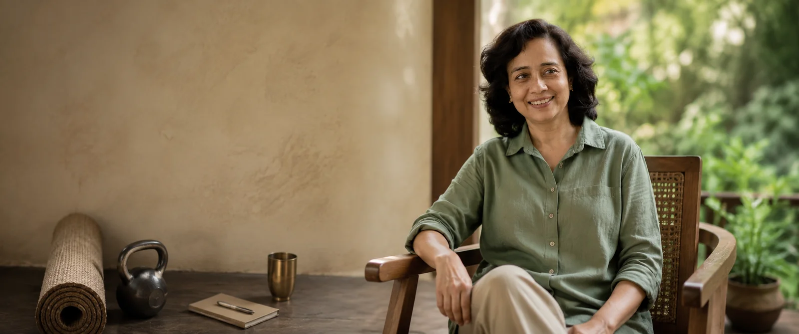
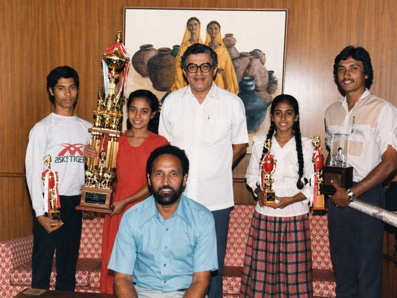
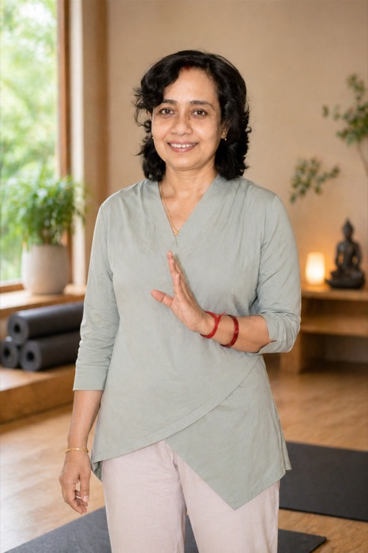

Practitioner · Educator · Founder
Soma
Mukherjee
Nearly three decades of practical work with people, bodies and workplaces.
Continue to Body Breath Well ↗1996Practice began
22 years 9 monthsTCS Research, Pune
YCB Level 3Teacher & Evaluator
Body Breath WellFounder
A professional life in observation
I have spent most of my working life watching people try to feel better.
Sometimes the problem looked obvious: a stiff back, poor sleep, stress, low energy, a shoulder that would not settle.
But very often, what a person came with was only one part of the story.
Someone came to improve flexibility and we discovered that the real difficulty was how they were sitting for ten hours a day. Someone wanted to learn breathing practices but was barely sleeping. Someone looked perfectly capable at work and was quietly exhausted.
And sometimes a person simply needed someone to listen long enough to understand what was actually going on.
01 — Beginning
I did not begin with a system.
I began with movement.
I was an athlete and gymnast when I was younger. Yoga became part of my life through that world of movement, discipline and practice.
There were competitions too. I won the All India Yoga Championship and National Yog Vyayam Championship in consecutive years and received the Yoga Kumari Award.
At that stage, naturally, I thought a great deal about what the body could do.
The years that followed made me much more interested in something else:
What does this particular person need today?
That question has stayed with me.
02 — Workplace
Then came the workplace.
22 years and 9 months
at TCS Research
In 2001, I joined TCS Research in Pune as its first yoga and fitness consultant.
I stayed for 22 years and 9 months.
That is difficult to reduce to a line on a CV because it meant spending years alongside real people living real working lives.
Engineers. Researchers. Scientists. Managers. Leaders.
People sitting too long.
People working under deadlines.
People raising families while building careers.
People exercising regularly but still hurting.
People appearing completely composed while sleeping badly for months.
I had the unusual opportunity to see the same people repeatedly—not during a weekend workshop, but across months and years.
And repetition teaches you things.

01Sleep affects mood.
02Stress changes breathing.
03Breathing influences how settled we feel.
04A workstation can contribute to pain that exercise alone does not resolve.
05A person can be physically strong and still need mobility.
06And sometimes the best intervention is surprisingly ordinary.
Useful can be ordinary
Move the feet.
Change the chair.
Walk after a meal.
Exhale before answering the next call.
Go to bed a little earlier.
Do fewer things, but do them regularly.
I became less interested in impressive solutions and more interested in useful ones.
Education
Over the years, my education kept widening.
I studied yoga formally and completed a Master's in Yoga & Science of Living.
I became a Yoga Certification Board Level 3 Yoga Teacher & Evaluator, under the Ministry of Ayush.
I trained in fitness management, food and nutrition, people management, yoga therapy and psychological counselling.
I continued studying stress, recovery, behaviour and the relationship between emotional and physical wellbeing.
But I have never believed that accumulating methods automatically makes someone a better practitioner.
Knowledge is useful only when it helps you see the person more clearly.
If someone comes to me with a problem, I should not begin by thinking:
“Which technique do I want to teach?”
I should be asking:
“What is happening here?”
03 — Practice
That is still how I work.
I listen first.
I watch.
I ask questions.
How are you sleeping?
What happens around 4 in the afternoon?
How long are you sitting?
When do you eat?
What happens when work finishes?
Do you feel tired, or do you feel unable to stop?
Where do you notice tension first?
What have you already tried?
Because two people can use exactly the same word—stress, fatigue, pain, poor sleep—and be describing completely different lives.
So I do not expect everybody to practise the same way.
One person may need movement. Another may need strength.
Another needs to learn how to rest without feeling guilty about resting.
Someone else may need a change in routine rather than another exercise.
Sometimes breath is useful. Sometimes conversation is useful.
Sometimes the responsible thing is to say:
This needs to be discussed with your doctor or an appropriate clinical professional.Knowing the limits of your own work is part of doing the work properly.
Progress
Nearly thirty years have changed my idea of progress.
When I was younger, progress was easier to see.
You became stronger. More flexible.
You could hold something longer or perform it better.
I still value strength, mobility and disciplined practice enormously.
But life has taught me to notice quieter forms of progress too.
Sleeping through the night after months of waking at 3 a.m.
Getting through a difficult meeting without carrying it into the evening.
Being able to sit comfortably again.
Having enough energy left at the end of the day to speak properly with your family.
Recognising tension before it becomes pain.
Stopping before exhaustion makes the decision for you.
These things are not dramatic. But they change lives.
Simplicity
The older I get, the simpler my work becomes.
Not because there is less to know.
Quite the opposite.
The more you learn about the human body and mind, the harder it becomes to believe in one universal answer.
People are complicated. Life is complicated.
Good practice does not always need to be.
After watching thousands of people try to improve their wellbeing, one pattern has stayed with me:
The people who changed usually did a few useful things consistently.
Not twenty things.
Not a complete new life from Monday morning.
A few things that actually fitted into the life they already had.
That idea sits at the centre of my work today.
04 — Today
Body
Breath
Well
Eventually I wanted to create a practice where I could bring together everything the years had taught me without turning people into categories.
That became Body Breath Well.
It is where I now work with individuals and organisations around areas such as stress, sleep, posture, energy, movement, recovery and emotional regulation.
The programmes are structured, but the person is never expected to fit the structure blindly.
We begin with what is happening.
Then we work from there.
Explore Body Breath Well ↗
For organisations
Wellbeing has to survive contact with the workplace.
My corporate work is also shaped by those years inside TCS Research.
People have meetings. Deadlines. Travel. Targets. Children waiting at home.
A practice that sounds wonderful in a presentation but cannot be used on an ordinary Wednesday afternoon is of limited value.
So when I work with organisations, I try to keep the work practical, live and responsive to the people actually in the room.
Work with Soma through Body Breath Well ↗Continued learning
I still consider myself a student.
There is an enormous amount about the human body, behaviour and wellbeing that we understand better today than we did thirty years ago.
And there is an enormous amount we still do not understand completely.
I find that exciting.
I continue to read, study, question old assumptions and examine new research.
Some traditional practices have survived for good reason.
Some claims around them deserve more scrutiny.
Some modern ideas are genuinely useful.
Others are simply old ideas wearing new vocabulary.
I am comfortable with that tension.
I do not think tradition and science need to be enemies.
Both deserve respect. Both deserve questions.
And neither should become more important than the human being sitting in front of us.
A personal note
A note from me
If you have reached this far, perhaps you were trying to decide whether you would feel comfortable speaking with me.
That is probably more important than deciding whether a particular programme sounds perfect.
You do not have to arrive knowing exactly what you need.
You can tell me what has been happening.
We can begin there.
— Soma
Meet Soma through Body Breath Well ↗Professional summary
Soma Mukherjee
Practitioner · Educator · Founder, Body Breath Well
- Practice
- Working with people since 1996
- Workplace
- 22 years 9 months at TCS Research
- Qualification
- YCB Level 3 — Yoga Teacher & Evaluator
- Education
- Master's in Yoga & Science of Living
- Based in
- Pune, India · Working internationally